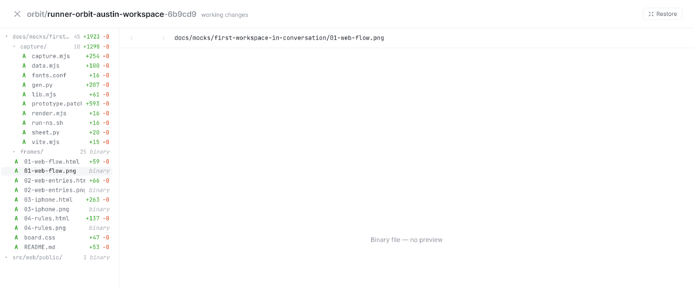
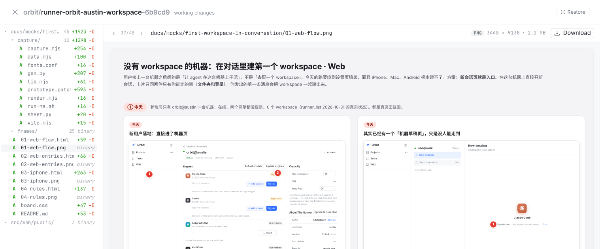
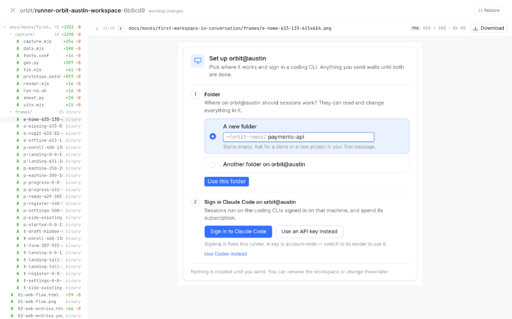
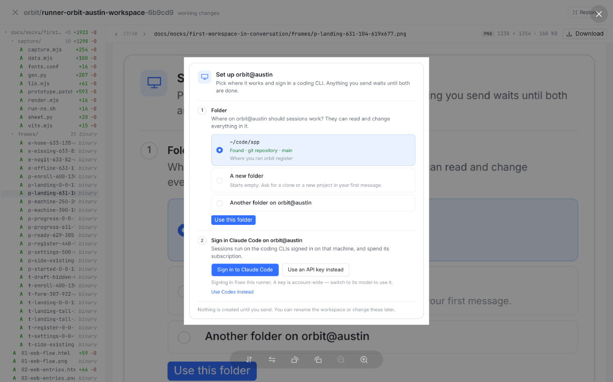
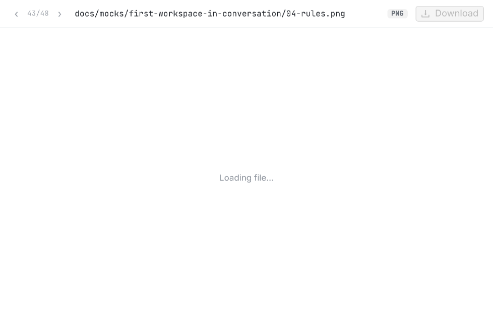
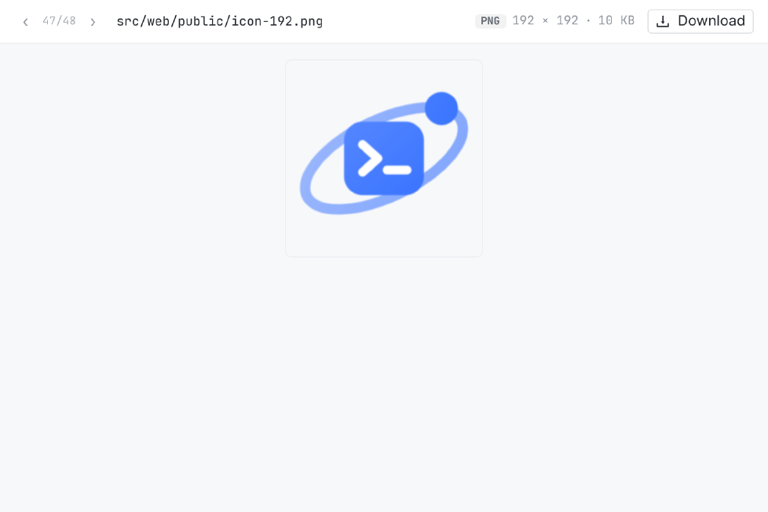
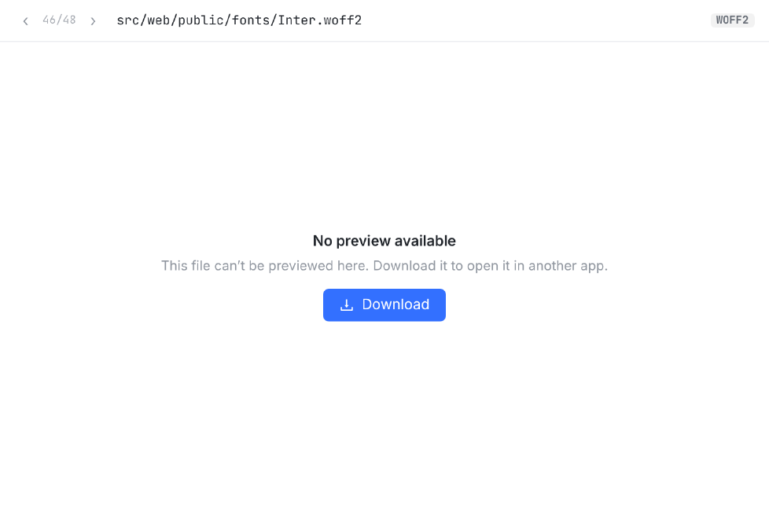
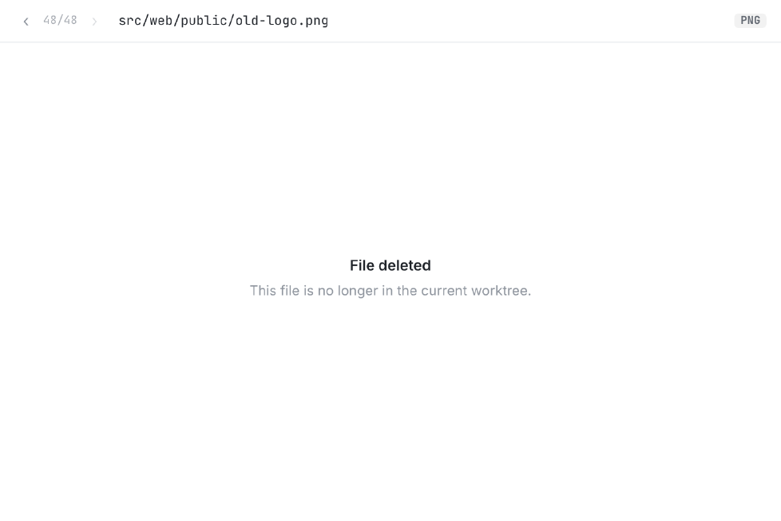
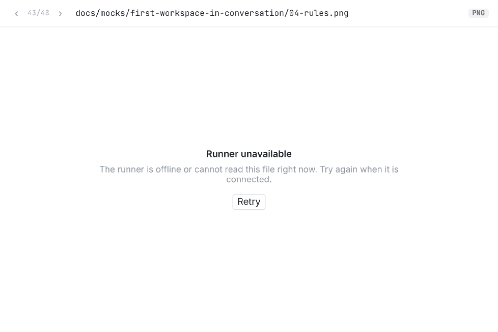
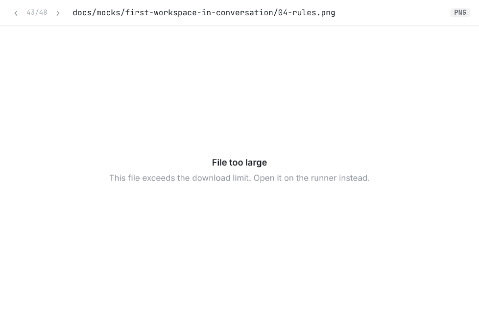

GET /sessions/:id/worktree-file，服务端让会话的 runner 从 worktree 现读这个文件。方案：Web 走同一条路，图片直接画在右侧，其他二进制给 Download。只改 Web；服务端要不要顺手加一行让它更快，见待你定 ③。
12-1）没有 patch，右侧只写 Binary file — no preview。你看 mock 板子时只能去别处打开 PNG。
1234
12capture/vite.mjs 按 ›，到下一个文件 frames/e-home-…png（11/48）。frames/ 全是二进制，今天默认收起；翻到它里面的文件时自动展开，列表上能看到你在哪。手动收起照旧有效。
12ui/ImagePreview）：滚轮 / 按钮缩放、拖动、旋转、翻转。





| 规则 | |
|---|---|
| 哪些文件 | 右侧文件列表里标 binary 的文件（git numstat 是 -）。文本文件、SVG（git 当文本）不变。 |
| 怎么拿字节 | 复用现成的 GET /sessions/:id/worktree-file?path=…：服务端让这个会话的 runner 从 worktree 读文件上传，iOS / macOS / Android 早就在用。只改 Web；服务端要不要加一行，见待你定 ③。 |
| 画哪些格式 | png、jpg/jpeg、gif、webp、avif、bmp、ico（所有浏览器都能画的）。其他二进制给 Download。 |
| 读的是哪一版 | worktree 里现在的文件。会话还在跑时，turn 结束会重读正在看的图（和 diff 一起刷新）。 |
| 翻回看过的图 | 先显示上次读到的那份，同时后台重读；离开一分钟后释放内存，翻几十张大图不会一直占着。 |
| 已结束的会话 | 同一条路：checkout 还在就能看；checkout 被回收后显示 File not found。 |
| 点工作区条打开抽屉 | 照旧先打开第一个文本文件（秒开）；想看图点图，或用 ‹ › 翻过去。 |
src/web/src/components/WorktreeFilePreview.tsx新：预览组件（头部类型 · 尺寸 · 大小、Download，图 / 各种状态）src/web/src/lib/worktreeFile.ts新：可画的格式、失败文案（照抄原生 WorktreeFileFailure）、大小格式src/web/src/components/SessionOutputs.tsxDiffPane 把二进制交给预览；‹ › 包括二进制；文件树展开当前文件所在的文件夹src/web/src/api.ts · lib/queries.tsgetWorktreeFile / worktreeFileQuerysrc/web/src/index.css.wt-preview-*（类名先 grep 过，没有撞）测试vitest：图 / 非图 / 删除 / 各状态码 / ‹ › 顺序 / 自动展开getWorktreeFileForOwner 里加一行 notifyRunnerWake 就能马上读，四个客户端的文件预览都会快。我建议一起做。